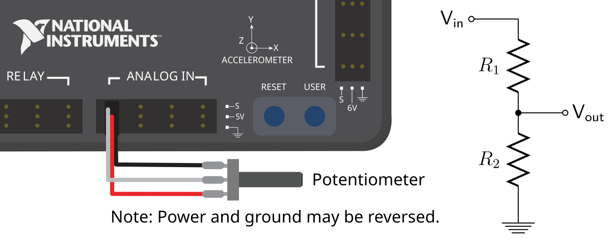
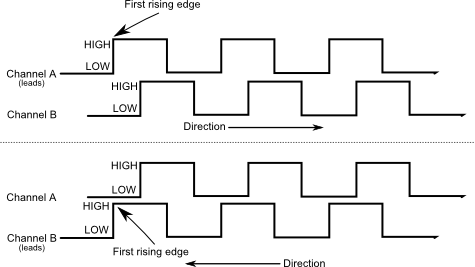
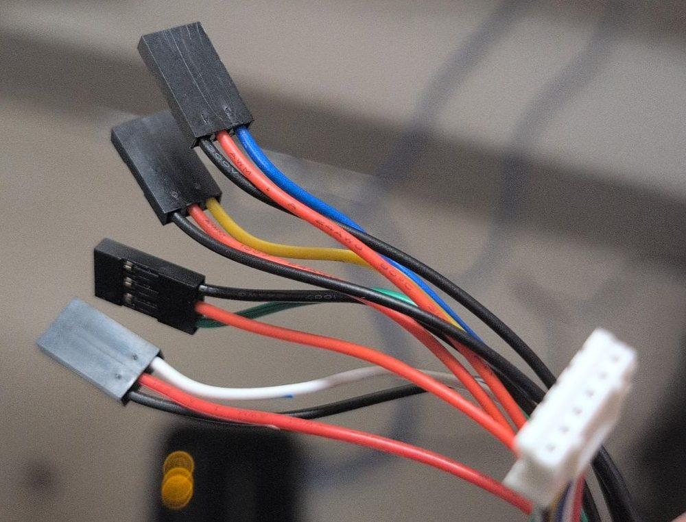

4.3 Sensors: Switches, Knobs, Encoders, and Gyros#
Why it matters#
Motors let the robot act. Sensors let it know what's happening. The labs use four kinds of sensor, each wired a different way and answering a different question:
| Sensor | Answers | Wired to | Labs |
|---|---|---|---|
| Limit switch | "Am I at the end?" | roboRIO DIO | 4 |
| 10-turn potentiometer | "Where is the knob?" | roboRIO Analog In | 5 |
| REV Through Bore Encoder | "How far has this shaft turned, and how fast?" | roboRIO DIO (two ports) | 6, 9, 10 |
| NavX2 | "Which way is the robot facing?" | roboRIO MXP port | 8 |
This lesson covers the hardware side: what each sensor is, how it's wired, and what can go wrong. The labs cover the code. Lesson 8 covers sensors and units in general.
Read this#
- Digital Inputs – Hardware (WPILib)
- Analog Inputs – Hardware (WPILib)
- Encoders – Hardware (WPILib)
- Gyroscopes – Hardware (WPILib)
Walkthrough#
The roboRIO's sensor ports#
| Port | How many | Signal | Our sensors |
|---|---|---|---|
| DIO (Digital I/O) | 10 (0–9) | On or off, read very fast | Limit switches, encoder channels A and B |
| Analog In | 4 (0–3) | A voltage from 0 to 5 V | Potentiometer |
| MXP | 1 wide connector | Many signals, including SPI | NavX2 |
Every DIO and Analog In port has three pins: ground, 5 V power, and signal. Sensors that need power use all three. A plain switch uses just signal and ground.
Plug the right way around
Most sensor plugs fit either way. Check the pin labels on the roboRIO (they're printed next to each row) and match ground, power, and signal. A backward plug usually just doesn't work, but it can damage some sensors.
Limit switches#
The test bed's limit switches are industrial plunger switches. Pushing the plunger flips a set of contacts inside.
| Contact | When not pressed | When pressed |
|---|---|---|
| NO (normally open) | Open: no connection | Closed: connected |
| NC (normally closed) | Closed: connected | Open: no connection |
The switch connects between a DIO signal pin and ground:

A limit switch wired to a DIO port: signal and ground only. From the WPILib docs, Digital Inputs - Hardware (CC BY 4.0).
From the WPILib docs: Why a switch reads high when open
All DIO ports have built-in pull-up resistors between the power pins and the signal pins. These make sure that when the signal pin is "floating" (not connected to anything), it reads high.
A simple switch doesn't need power, so it has just two wires, between signal and ground. When the switch is open, the signal pin floats and the pull-up makes it read high. When the switch closes, it connects the signal straight to ground, so it reads low.
Adapted from Digital Inputs - Hardware, CC BY 4.0.
So with NO contacts:
| Switch | Signal | get() returns |
|---|---|---|
| Not pressed | Pulled up | true |
| Pressed | Connected to ground | false |
That's why Lab 4 uses !m_limitSwitch.get() to mean "pressed."
NC is safer for real mechanisms
With NC wiring, a broken or unplugged wire reads the same as "pressed," so the robot stops instead of driving past the end. With NO wiring, a broken wire looks like "never pressed" and the motor keeps going. Many teams wire safety limits NC for this reason.
Potentiometers#
A potentiometer ("pot") is a variable resistor with three pins: two ends of a resistive strip, and a wiper that slides along it as the shaft turns.
5 V ──┬─────────────────┐
│ resistive strip │
GND ──┴────────▲────────┘
│
wiper ──→ Analog In signal
The wiper's voltage goes from about 0 V at one end to about 5 V at the other. The test bed's is a 10-turn pot: ten full turns from end to end, which gives very fine resolution.

A potentiometer on an Analog In port (left) is a voltage divider (right). From the WPILib docs, Analog Potentiometers - Hardware (CC BY 4.0).
From the WPILib docs: Which end reads 0 V?
The middle pin of a potentiometer is the signal. The two outer pins can each be either power or ground. As the shaft turns, the two resistances R1 and R2 change, but their sum stays the same, so the signal voltage changes evenly as you turn.
Because the circuit is symmetric, you choose which end of the travel reads 0 V. To reverse the direction, wire it backwards: swap the two outer pins.
Adapted from Analog Potentiometers - Hardware, CC BY 4.0.
| Potentiometer | |
|---|---|
| Measures | Absolute position, within its range |
| After power-on | Knows its real position right away |
| Range | Limited: has hard stops at each end |
| Weaknesses | A little noisy; can wear out with lots of use |
Potentiometers are cheap and simple, so teams use them to measure arm angles and as driver knobs, like in Lab 5.
The REV Through Bore Encoder#
The Through Bore Encoder mounts around a 1/2" hex shaft (the shaft passes through its center), and measures the shaft's rotation with a magnet and sensor.
It has two outputs:
| Output | Signal | What it gives you | We use it? |
|---|---|---|---|
| Quadrature (A and B) | Two square waves | How far the shaft has turned, any number of turns, plus speed. 2048 cycles (8192 counts) per revolution. | Yes, on two DIO ports |
| Absolute | One pulse whose width shows the angle | The shaft's angle within one turn, even right after power-on | Not yet |
Quadrature, explained. Channels A and B each switch on and off as the shaft turns, a quarter-cycle apart. One full cycle steps through four states, and the order of the states tells the roboRIO the direction:
| Step | Turning forward (A, B) | Turning backward (A, B) |
|---|---|---|
| 1 | off, off | off, off |
| 2 | on, off | off, on |
| 3 | on, on | on, on |
| 4 | off, on | on, off |
Turning forward, A switches first. Turning backward, B switches first. Every one of those switches is one count, so one cycle is 4 counts.

The direction comes from which channel (A or B) changes first. From the WPILib docs, Encoders - Software (CC BY 4.0).
The roboRIO counts these in hardware (its FPGA chip), so it never misses a count, even though your code only runs every 20 ms.
| Quadrature encoder | |
|---|---|
| Measures | How far, and how fast, from where it started |
| After power-on | Reads 0, wherever the shaft is |
| Range | Unlimited turns |
| So you must... | Start the mechanism in a known spot, like the elevator at the bottom (Lab 10) |
Wiring the Through Bore Encoder to the roboRIO#
The encoder has a small white 6-pin JST socket. Its cable splits into four 3-pin Dupont plugs, one per signal, each with its own red (5 V) and black (ground) wire. The color of the third wire tells you which signal it is:

The encoder end of the cable is the white JST plug (right). The four 3-pin Dupont plugs go to the roboRIO. Each has a red wire (5 V), a black wire (ground), and one colored signal wire.
| Plug (signal wire color) | Signal | Where it goes |
|---|---|---|
| Blue | Quadrature channel A | A DIO port, like 0 |
| Yellow | Quadrature channel B | The next DIO port, like 1 |
| Green | Index: one pulse per turn | Not used in this course. Tape it out of the way. |
| White | Absolute position (a duty-cycle signal) | Not used in this course. It's for reading the shaft's angle right after power-on, with WPILib's DutyCycleEncoder. |
Which way around? Each roboRIO DIO port is three pins in a row, and the roboRIO has a label printed next to each row of pins: the ground symbol (⏚), V (5 V), and S (signal). Turn each plug so the black wire is on ground (⏚), the red wire is on V, and the blue or yellow wire is on S. Every plug on this cable has its own red and black, so each one powers itself; that's normal.
The two DIO port numbers become EncoderChannelA and EncoderChannelB in Constants. Which robot uses which ports:
| Encoder | Robot | Blue (A) | Yellow (B) | Lab |
|---|---|---|---|---|
| Test bed wheel | Test bed | DIO 0 | DIO 1 | Lab 6 |
| Left drive gearbox | WCD | DIO 2 | DIO 3 | Lab 8 |
| Right drive gearbox | WCD | DIO 4 | DIO 5 | Lab 8 |
| Elevator | WCD | DIO 0 | DIO 1 | Lab 10 |
Counting the wrong way?
If the encoder counts down when the mechanism moves the way you call forward, you can either set its ...Inverted constant to true in code, or swap the blue and yellow plugs. Pick one. Doing both puts it back where it started.
Cycles, not counts
WPILib's Encoder class calls one full quadrature cycle a "pulse." The Through Bore is 2048 cycles per revolution. Using 8192 (the count with 4x decoding) makes every distance 4 times too small.
The NavX2-MXP gyro#
The NavX2 is a small board with its own processor and three kinds of sensors: gyros (rotation), accelerometers (acceleration), and a magnetometer (compass). It combines them to report the robot's orientation.
| NavX2-MXP | |
|---|---|
| Mounts | Plugs straight into the roboRIO's MXP port, on top of the roboRIO |
| Talks over | SPI, through the MXP port (USB also works) |
| Most useful value | Yaw: which way the robot is facing (Lab 8) |
| At power-on | Calibrates for a few seconds. The robot must sit still. |
| Weakness | Slowly drifts: the heading creeps a little over time |

Yaw is turning left and right; pitch and roll are tipping. From the WPILib docs, Gyroscopes - Hardware (CC BY 4.0).
Mounting matters
The NavX measures rotation around the axis pointing up through the board. If the roboRIO is mounted flat, that's the robot's yaw. If it's mounted on its side, the NavX has to be told which way is up, or the headings will be wrong. Keep it flat, and firmly attached, so it moves exactly with the robot.
Which sensor for which job?#
| Job | Best sensor | Why |
|---|---|---|
| Stop an elevator at the bottom | Limit switch | Simple, reliable, and can re-zero an encoder |
| Know how high the elevator is | Encoder | Precise over the whole range of travel |
| Measure an arm angle | Potentiometer or absolute encoder | Knows the angle right after power-on |
| Drive a set distance | Encoder on the drivetrain | Counts wheel rotations |
| Turn to an angle | Gyro | Measures the robot's rotation directly |
| Driver adjusts a value | Potentiometer | A knob is easy for people to use |
Try it#
- Find each sensor on the test bed and WCD, and follow its wire to the roboRIO. Write down the port number for each.
- On a limit switch, find the NO and NC terminals. Which one is wired on the test bed?
- Find the Through Bore Encoder's two quadrature wires and which DIO ports they go to
- Find the NavX2 on the WCD's roboRIO. Is it mounted flat?
- Fill in a wiring table for your team: every sensor, its port, and which lab uses it. Post it near the test bed.
Check yourself#
What's the difference between DIO and Analog In ports?
DIO reads on or off. Analog In reads a voltage from 0 to 5 V, so it can measure a range of values.
With NO wiring, what does a limit switch read when pressed? Why?
false. Pressing connects the signal pin to ground, which pulls it low.
Why might a team wire a safety limit switch NC instead of NO?
With NC, a broken wire looks the same as "pressed," so the mechanism stops. With NO, a broken wire looks like "never pressed," and the motor keeps going.
Why does a quadrature encoder need two channels?
The order the two channels change tells the roboRIO which direction the shaft is turning.
What's the difference between a potentiometer and a quadrature encoder after the robot turns on?
The potentiometer knows its real position immediately. The quadrature encoder reads 0 wherever the shaft is, so the mechanism has to start in a known position.
Why must the robot sit still when the NavX2 powers on?
It calibrates itself during the first few seconds. Moving during calibration makes the heading drift for the rest of the session.